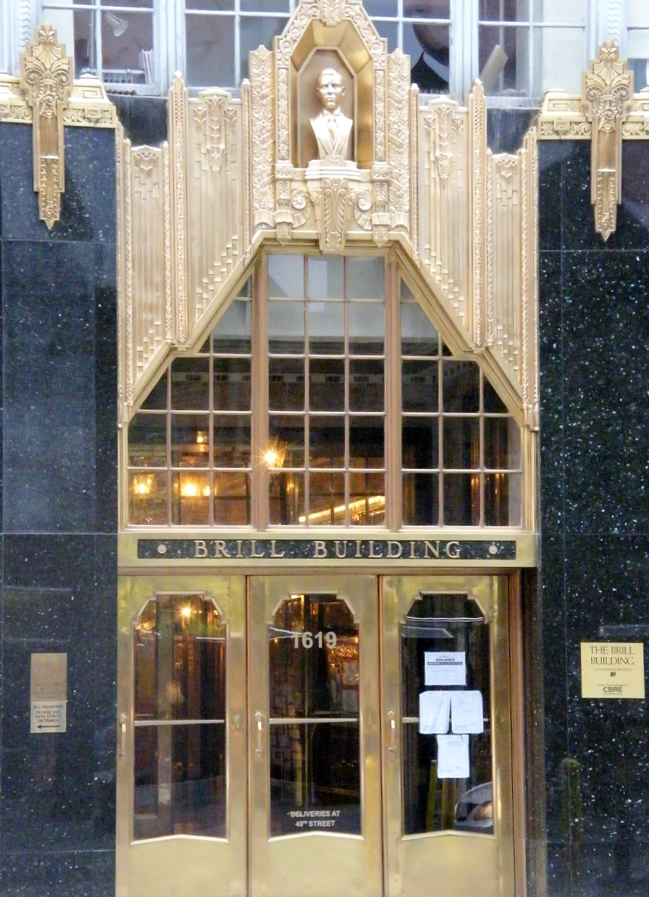

Brill Building Pop ruled early 1960s American radio from a single crowded office tower in midtown Manhattan.
Professional songwriting teams inside it turned out one polished hit after another for girl groups and teen idols.

Table of Contents
- What This Genre Covers
- Inside the Hit Factory at 1619 Broadway
- The Songwriting Teams Behind the Sound
- Girl Groups and the Wall of Sound
- The Shift Toward Bubblegum Pop
- The Artists Who Defined the Sound
- FAQ
What Is Brill Building Pop
The genre takes its name from a single office tower at 1619 Broadway in New York City.
It is generally dated from 1958 to 1964.
That start point is the year Elvis Presley entered the Army.
The end point is the arrival of the British Invasion.
Staff songwriters inside the building combined classic Tin Pan Alley craft with current pop sounds.
Their lyrics leaned on idealized teenage romance and adolescent anxiety.
Productions typically featured full orchestras and large rhythm sections behind the singers.
A Genre Built on Teamwork
Unlike the singer-songwriters who followed later in the decade, this system ran on strict division of labor.
One writer usually handled melody while a partner wrote lyrics.
A separate producer then shaped the finished record.
That assembly-line approach let a handful of teams supply material to dozens of acts at once.
It is why so many unrelated girl groups and teen idols shared the same writing credits.
Inside the Hit Factory at 1619 Broadway
The Brill Building itself opened in the early 1930s.
It had housed music businesses for decades before the 1960s boom.
By 1962 it held roughly 165 separate music companies under one roof.
Publishers, booking agents, and vocal coaches all shared the building.
Writers worked in small, cramped rooms furnished with little more than an upright piano.
The Brill Building became a New York City landmark in 2010, per Wikipedia.
The New York Times later called it an "art deco sweatshop of smash hits."
Don Kirshner and Aldon Music
Publisher Don Kirshner ran his own operation, Aldon Music, a few blocks away at 1650 Broadway.
Colleagues nicknamed him "the man with the golden ear" for his knack at picking hits.
Kirshner's roster launched the careers of Bobby Darin, Neil Sedaka, and Carole King.
Later in the decade he assembled and managed The Monkees.
He then built the cartoon group The Archies, carrying the same hit-factory model into bubblegum pop.
The Songwriting Teams Behind the Sound
A handful of songwriting duos wrote most of the era's biggest records.
Gerry Goffin and Carole King, married while still teenagers, wrote The Shirelles' "Will You Love Me Tomorrow."
The same pair also wrote Little Eva's "The Loco-Motion."
Barry Mann and Cynthia Weil wrote across pop and R&B for multiple labels through the decade.
Jeff Barry and Ellie Greenwich wrote The Dixie Cups' "Chapel of Love."
That duo also co-wrote The Ronettes' "Be My Baby" with producer Phil Spector.
Burt Bacharach and Hal David built a sophisticated, jazz-inflected catalog for Dionne Warwick and others.
Doc Pomus and Mort Shuman rounded out the era's most prolific partnerships.
Neil Sedaka and the Quintessential Brill Sound
Neil Sedaka wrote and performed his own material rather than working strictly behind the scenes.
His 1962 single "Breaking Up Is Hard to Do" is widely cited as a defining example of the sound.
Its bouncy piano hook and heartbreak lyric captured the formula the building's writers had perfected.
Girl Groups and the Wall of Sound
Girl groups gave the era's songwriters their most consistent commercial outlet.
The Shirelles hit number one with "Will You Love Me Tomorrow" in 1961.
That made them the first girl group ever to top the Billboard Hot 100.
The Crystals followed with "Da Doo Ron Ron" and "Then He Kissed Me."
Both were driven by producer Phil Spector's dense, layered arrangements.
Lesley Gore was only sixteen when she recorded "It's My Party" in 1963.
The Shangri-Las brought a darker, more theatrical edge with "Leader of the Pack," produced by Shadow Morton.
Phil Spector's Wall of Sound
Producer Phil Spector built his own signature style on top of this songwriting tradition.
It became known as the Wall of Sound.
He stacked multiple guitars, pianos, and percussion players into one dense mono mix.
The Ronettes' 1963 hit "Be My Baby" remains the clearest showcase of that technique.
Its opening drumbeat alone has been sampled and studied by producers for decades since.
The Shift Toward Bubblegum Pop
The hit-factory model kept adapting even as rock bands began writing their own songs.
Songwriters Tommy Boyce and Bobby Hart wrote The Monkees' "Last Train to Clarksville."
Kirshner had assembled the group specifically for television.
Neil Diamond, another writer from the same songwriting world, gave the group "I'm a Believer," its biggest hit.
Meanwhile Frankie Valli and The Four Seasons, and The Turtles, kept polished, harmony-driven pop on the charts through the mid-1960s.
The British Invasion Changes the Charts
The Beatles' arrival in America in 1964 changed the industry fast.
Radio attention shifted toward self-contained bands writing their own material, the sound of the British Invasion that followed.
Producers Jerry Kasenetz and Jeffry Katz coined the term "bubblegum" for the simpler, kid-focused pop that grew out of that shift.
The Archies' 1969 single "Sugar, Sugar," co-written by Kirshner veteran Jeff Barry, became the clearest example of that next phase.
By decade's end, much of the industry's songwriting business had begun shifting toward Los Angeles.
The Artists Who Defined the Sound
These eight acts carried the sound and its bubblegum successor through the decade.
- The Shirelles, whose "Will You Love Me Tomorrow" made history as the first girl-group number one
- The Ronettes, Phil Spector's Wall of Sound showcase on "Be My Baby"
- The Crystals, behind "Da Doo Ron Ron" and "Then He Kissed Me"
- The Shangri-Las, the theatrical teen-tragedy voice of "Leader of the Pack"
- Lesley Gore, the teenage star of "It's My Party"
- The Four Seasons, Frankie Valli's falsetto on "Sherry" and "Walk Like a Man"
- The Monkees, the Kirshner-assembled group behind "I'm a Believer"
- The Turtles, whose "Happy Together" carried the harmony-pop sound into 1967
FAQ
What is Brill Building pop?
Brill Building pop is the professionally written, orchestra-backed pop sound that came out of songwriting teams working at 1619 Broadway in New York City.
It dominated the charts roughly from 1958 to 1964, powering hits for girl groups and teen idols before the British Invasion changed the industry.
Who were the most famous Brill Building songwriters?
Gerry Goffin and Carole King, Barry Mann and Cynthia Weil, and Jeff Barry and Ellie Greenwich were the era's defining husband-and-wife songwriting teams.
Neil Sedaka, Burt Bacharach and Hal David, and Doc Pomus and Mort Shuman also wrote major hits from the building and its Aldon Music offices nearby.
What is the difference between Brill Building pop and bubblegum pop?
This style was written for a general teen and young adult audience by career songwriters using classic Tin Pan Alley craft.
Bubblegum pop grew directly out of it in the late 1960s and aimed even younger, with simpler chords, singsong hooks, and acts built for a preteen audience, like The Archies.
Why did the Brill Building sound decline?
The British Invasion, led by The Beatles, pulled radio attention toward self-contained bands writing their own material starting in 1964.
Songwriter-driven acts like Bob Dylan also shifted the culture toward personal songwriting, and by the late 1960s the industry itself had started relocating toward Los Angeles.
Is the Brill Building still standing?
Yes.
The Brill Building still stands at 1619 Broadway in Manhattan and was designated a New York City landmark in 2010.
It now operates mainly as office space, no longer packed with the music publishers and songwriters who once filled its eleven floors.
Brill Building Pop turned songwriting into a trade, and that trade ruled American radio for six short years.
Compare its craftsman-built hooks against the guitar-driven answer of the British Invasion genre hub, or test your knowledge with the What's Your 60s Sound? quiz and the 1960s Music Trivia tool.
Head back to the 1960smusic.net homepage to explore every other genre that shaped the decade.